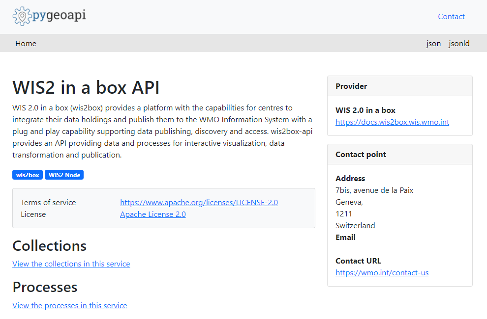
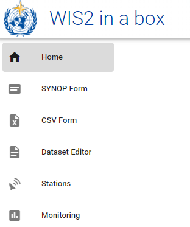

Inizializzazione di wis2box
Risultati di apprendimento
Alla fine di questa sessione pratica, sarai in grado di:
- eseguire lo script
wis2box-create-config.pyper creare la configurazione iniziale - avviare wis2box e controllare lo stato dei suoi componenti
- accedere a wis2box-webapp, API, interfaccia MinIO e dashboard Grafana in un browser
- connettersi al wis2box-broker locale utilizzando MQTT Explorer
Note
I materiali di formazione attuali utilizzano wis2box-1.0.0rc1.
Vedi accessing-your-student-vm per istruzioni su come scaricare e installare lo stack software wis2box se stai eseguendo questa formazione al di fuori di una sessione di formazione locale.
Preparazione
Accedi alla tua VM designata con il tuo nome utente e password e assicurati di essere nella directory wis2box-1.0.0rc1:
cd ~/wis2box-1.0.0rc1
Creazione della configurazione iniziale
La configurazione iniziale per wis2box richiede:
- un file di ambiente
wis2box.envcontenente i parametri di configurazione - una directory sulla macchina host da condividere tra la macchina host e i container wis2box definita dalla variabile di ambiente
WIS2BOX_HOST_DATADIR
Lo script wis2box-create-config.py può essere utilizzato per creare la configurazione iniziale del tuo wis2box.
Ti farà una serie di domande per aiutarti a configurare la tua configurazione.
Potrai rivedere e aggiornare i file di configurazione dopo che lo script sarà completato.
Esegui lo script come segue:
python3 wis2box-create-config.py
Directory wis2box-host-data
Lo script ti chiederà di inserire la directory da utilizzare per la variabile di ambiente WIS2BOX_HOST_DATADIR.
Nota che devi definire il percorso completo di questa directory.
Ad esempio, se il tuo nome utente è username, il percorso completo della directory è /home/username/wis2box-data:
username@student-vm-username:~/wis2box-1.0.0rc1$ python3 wis2box-create-config.py
Please enter the directory to be used for WIS2BOX_HOST_DATADIR:
/home/username/wis2box-data
The directory to be used for WIS2BOX_HOST_DATADIR will be set to:
/home/username/wis2box-data
Is this correct? (y/n/exit)
y
The directory /home/username/wis2box-data has been created.
URL di wis2box
Successivamente, ti verrà chiesto di inserire l'URL per il tuo wis2box. Questo è l'URL che verrà utilizzato per accedere all'applicazione web wis2box, all'API e all'interfaccia utente.
Utilizza http://<tuo-hostname-o-ip> come URL.
Please enter the URL of the wis2box:
For local testing the URL is http://localhost
To enable remote access, the URL should point to the public IP address or domain name of the server hosting the wis2box.
http://username.wis2.training
The URL of the wis2box will be set to:
http://username.wis2.training
Is this correct? (y/n/exit)
Password per WEBAPP, STORAGE e BROKER
Puoi utilizzare l'opzione di generazione casuale delle password quando richiesto per WIS2BOX_WEBAPP_PASSWORD, WIS2BOX_STORAGE_PASSWORD, WIS2BOX_BROKER_PASSWORD o definire le tue.
Non preoccuparti di ricordare queste password, saranno memorizzate nel file wis2box.env nella tua directory wis2box-1.0.0rc1.
Revisione di wis2box.env
Una volta completato lo script, controlla il contenuto del file wis2box.env nella tua directory corrente:
cat ~/wis2box-1.0.0rc1/wis2box.env
Oppure controlla il contenuto del file tramite WinSCP.
Question
Qual è il valore di WISBOX_BASEMAP_URL nel file wis2box.env?
Clicca per rivelare la risposta
Il valore predefinito per WIS2BOX_BASEMAP_URL è https://{s}.tile.openstreetmap.org/{z}/{x}/{y}.png.
Questo URL si riferisce al server di tile di OpenStreetMap. Se desideri utilizzare un provider di mappe diverso, puoi modificare questo URL per puntare a un server di tile diverso.
Question
Qual è il valore della variabile di ambiente WIS2BOX_STORAGE_DATA_RETENTION_DAYS nel file wis2box.env?
Clicca per rivelare la risposta
Il valore predefinito per WIS2BOX_STORAGE_DATA_RETENTION_DAYS è 30 giorni. Puoi modificare questo valore a un numero diverso di giorni se lo desideri.
Il container wis2box-management esegue un cronjob su base giornaliera per rimuovere i dati più vecchi del numero di giorni definito da WIS2BOX_STORAGE_DATA_RETENTION_DAYS dal bucket wis2box-public e dal backend API:
0 0 * * * su wis2box -c "wis2box data clean --days=$WIS2BOX_STORAGE_DATA_RETENTION_DAYS"
Note
Il file wis2box.env contiene variabili di ambiente che definiscono la configurazione del tuo wis2box. Per ulteriori informazioni consulta la documentazione wis2box.
Non modificare il file wis2box.env a meno che tu non sia sicuro delle modifiche che stai apportando. Modifiche errate possono causare il malfunzionamento del tuo wis2box.
Non condividere il contenuto del tuo file wis2box.env con nessuno, poiché contiene informazioni sensibili come le password.
Avvio di wis2box
Assicurati di essere nella directory contenente i file di definizione dello stack software wis2box:
cd ~/wis2box-1.0.0rc1
Avvia wis2box con il seguente comando:
python3 wis2box-ctl.py start
Quando esegui questo comando per la prima volta, vedrai il seguente output:
No docker-compose.images-*.yml files found, creating one
Current version=Undefined, latest version=1.0.0rc1
Would you like to update ? (y/n/exit)
Seleziona y e lo script creerà il file docker-compose.images-1.0.0rc1.yml, scaricherà le immagini Docker necessarie e avvierà i servizi.
Il download delle immagini potrebbe richiedere del tempo a seconda della velocità della tua connessione internet. Questo passaggio è necessario solo la prima volta che avvii wis2box.
Controlla lo stato con il seguente comando:
python3 wis2box-ctl.py status
Ripeti questo comando finché tutti i servizi non sono attivi e funzionanti.
wis2box e Docker
wis2box viene eseguito come un insieme di container Docker gestiti da docker-compose.
I servizi sono definiti nei vari file docker-compose*.yml che si trovano nella directory ~/wis2box-1.0.0rc1/.
Lo script Python wis2box-ctl.py viene utilizzato per eseguire i comandi Docker Compose sottostanti che controllano i servizi wis2box.
Non è necessario conoscere i dettagli dei container Docker per eseguire lo stack software wis2box, ma puoi ispezionare i file docker-compose*.yml per vedere come sono definiti i servizi. Se sei interessato a saperne di più su Docker, puoi trovare ulteriori informazioni nella documentazione Docker.
Per accedere al container wis2box-management, usa il seguente comando:
python3 wis2box-ctl.py login
All'interno del container wis2box-management puoi eseguire vari comandi per gestire il tuo wis2box, come:
wis2box auth add-token --path processes/wis2box: per creare un token di autorizzazione per l'endpointprocesses/wis2boxwis2box data clean --days=<numero-di-giorni>: per pulire i dati più vecchi di un certo numero di giorni dal bucketwis2box-public
Per uscire dal container e tornare alla macchina host, usa il seguente comando:
exit
Esegui il seguente comando per vedere i container docker in esecuzione sulla tua macchina host:
docker ps
Dovresti vedere i seguenti container in esecuzione:
- wis2box-management
- wis2box-api
- wis2box-minio
- wis2box-webapp
- wis2box-auth
- wis2box-ui
- wis2downloader
- elasticsearch
- elasticsearch-exporter
- nginx
- mosquitto
- prometheus
- grafana
- loki
Questi container fanno parte dello stack software wis2box e forniscono i vari servizi necessari per eseguire il wis2box.
Esegui il seguente comando per vedere i volumi docker in esecuzione sulla tua macchina host:
docker volume ls
Dovresti vedere i seguenti volumi:
- wis2box_project_auth-data
- wis2box_project_es-data
- wis2box_project_htpasswd
- wis2box_project_minio-data
- wis2box_project_prometheus-data
- wis2box_project_loki-data
Oltre ad alcuni volumi anonimi utilizzati dai vari container.
I volumi che iniziano con wis2box_project_ vengono utilizzati per memorizzare dati persistenti per i vari servizi nello stack software wis2box.
API wis2box
Il wis2box contiene un'API (Application Programming Interface) che fornisce accesso ai dati e processi per la visualizzazione interattiva, la trasformazione dei dati e la pubblicazione.
Apri una nuova scheda e naviga alla pagina http://<tuo-host>/oapi.

Questa è la pagina di destinazione dell'API wis2box (in esecuzione tramite il container wis2box-api).
Question
Quali collezioni sono attualmente disponibili?
Clicca per rivelare la risposta
Per visualizzare le collezioni attualmente disponibili tramite l'API, fai clic su View the collections in this service:

Le seguenti collezioni sono attualmente disponibili:
- Stations (Stazioni)
- Data notifications (Notifiche dati)
- Discovery metadata (Metadati di scoperta)
Question
Quante notifiche di dati sono state pubblicate?
Clicca per rivelare la risposta
Fai clic su "Data notifications", quindi fai clic su Browse through the items of "Data Notifications".
Noterai che la pagina dice "No items" poiché non sono ancora state pubblicate notifiche di dati.
wis2box webapp
Apri un browser web e visita la pagina http://<tuo-host>/wis2box-webapp.
Vedrai un pop-up che ti chiede il tuo nome utente e password. Utilizza il nome utente predefinito wis2box-user e la WIS2BOX_WEBAPP_PASSWORD definita nel file wis2box.env e fai clic su "Sign in":
Note
Controlla il tuo wis2box.env per il valore di WIS2BOX_WEBAPP_PASSWORD. Puoi utilizzare il seguente comando per controllare il valore di questa variabile di ambiente:
cat ~/wis2box-1.0.0rc1/wis2box.env | grep WIS2BOX_WEBAPP_PASSWORD
Una volta effettuato l'accesso, sposta il mouse sul menu a sinistra per vedere le opzioni disponibili nell'applicazione web wis2box:

Questa è l'applicazione web wis2box che ti consente di interagire con il tuo wis2box:
- creare e gestire dataset
- aggiornare/rivedere i metadati delle tue stazioni
- inserire dati ASCII e CSV
- monitorare le notifiche pubblicate sul tuo wis2box-broker
Utilizzeremo questa applicazione web in una sessione successiva.
wis2box-broker
Apri MQTT Explorer sul tuo computer e prepara una nuova connessione per connetterti al tuo broker (in esecuzione tramite il container wis2box-broker).
Fai clic su + per aggiungere una nuova connessione:

Puoi fare clic sul pulsante 'ADVANCED' e verificare di avere sottoscrizioni ai seguenti argomenti:
#$SYS/#

Note
L'argomento # è una sottoscrizione jolly che si sottoscriverà a tutti gli argomenti pubblicati sul broker.
I messaggi pubblicati sotto l'argomento $SYS sono messaggi di sistema pubblicati dal servizio mosquitto stesso.
Utilizza i seguenti dettagli di connessione, assicurandoti di sostituire il valore di <tuo-host> con il tuo nome host e <WIS2BOX_BROKER_PASSWORD> con il valore dal tuo file wis2box.env:
- Protocol: mqtt://
- Host:
<tuo-host> - Port: 1883
- Username: wis2box
- **Password: `